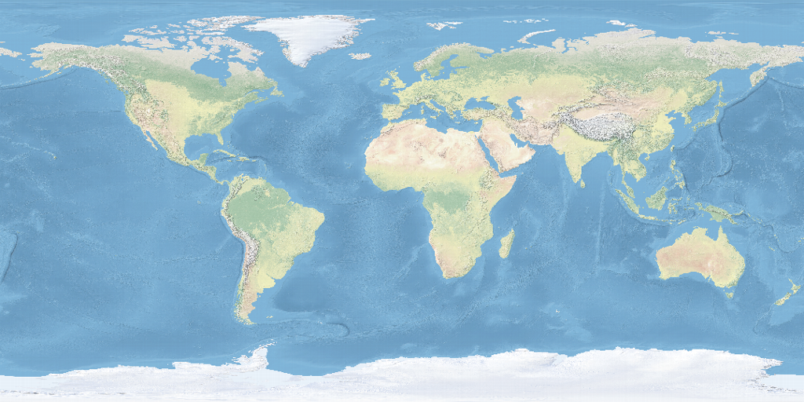

BIODEX // FIELD UNIT 07
XENOBIOLOGICAL RECORD
LINK LOCALENV 11.4°CPWR 74%
 OPTICAL RECORD // 03
CAPTURE 2026.228 · 42.9°N
OPTICAL RECORD // 03
CAPTURE 2026.228 · 42.9°N
CATALOG AX-0042 · AVES / ANATIDAE
MALLARD
Anas platyrhynchos
IDENTITY CONFIRMED
4 SOURCES AGREE
● 0.96 CONF
4 SOURCES AGREE
● 0.96 CONF
HAZARDLOW
MASS1.0kg
LENGTH57cm
STATUSLC
SEX DETERMINATIONZW ♀ / ZZ ♂
REPRODUCTIONSEXUAL · OVIPAROUS
ASSEMBLY CHR41
MT LENGTH15.6kb
A highly adaptable aquatic bird recorded across temperate wetlands. Strong sexual dimorphism. Current specimen matches established plumage, morphology, and range signals.
CALIBRATED AGAINST ORDER ANSERIFORMES
LIFESPAN
3 yr
BODY MASS
1.0 kg
LENGTH
57 cm
FIELD NOTE // AUTO-SYNTHESIS
Observed in paired formation near shallow fresh water. Geographic signal is broad and well corroborated. No anomalous morphology detected.
Observed in paired formation near shallow fresh water. Geographic signal is broad and well corroborated. No anomalous morphology detected.
GBIF ✓NCBI ✓INAT ✓WIKI ✓
Range page would give the map the entire lower instrument surface.
Animalia → Chordata → Aves → Anseriformes → Anatidae → Anas → A. platyrhynchos
EVIDENCE REGISTER
Identity + range · GBIF / iNaturalist
Assembly chromosomes + MT length · NCBI / Ensembl assembly
Sex determination · curated literature dataset
Reproduction · referenced taxon trait
Identity + range · GBIF / iNaturalist
Assembly chromosomes + MT length · NCBI / Ensembl assembly
Sex determination · curated literature dataset
Reproduction · referenced taxon trait
INTERPRETATION
41 is assembly-scoped—not diploid 2n.
ZW / ZZ is a species trait—not specimen sex.
Unknown, variable, and conflicting claims remain visible.
41 is assembly-scoped—not diploid 2n.
ZW / ZZ is a species trait—not specimen sex.
Unknown, variable, and conflicting claims remain visible.
OPTIC_FEED
FIELD_RECORD AX-0042
MATCH 0.96 / PLUMAGE + RANGE + MORPHOLOGY
MALLARD
Anas platyrhynchos
HAZARD // LOWIUCN // LCAves · Anatidae
MASS1.0 kg
LENGTH57 cm
LIFESPAN3 yr
GENOME1.26 Gb
REPROSEXUAL
SIGNALSTRONG
RANGE_SIGNAL / EARTH

DISTRIBUTION TRACE
COVERAGE
BROAD
QUALITY
0.91
North America · Europe · Asia · Oceania · Northern Africa. Migratory populations produce seasonal variance.
GBIFINATCACHE 18m
BIODEX · EXPEDITION SLATE 04
FIELD RECORD AX-0042 · ANIMALIA
MALLARD
Anas platyrhynchos
IDENTITY LOCK
96%
4 SOURCES AGREE
MASS1.0 kgadult mean
LENGTH57 cmadult mean
HAZARDLOWno alert traits
RANGEBROAD6 regions
SYNTHESIZED FIELD NOTE
A highly adaptable aquatic bird recorded across temperate wetlands. Strong sexual dimorphism. Current specimen matches established plumage, morphology, and range signals.
Animalia / Chordata / Aves / Anseriformes / Anatidae / Anas
RANGE SIGNAL0.91
REGIONS6
Full-width map replaces this summary when promoted to production.
KINGDOMAnimalia
CLASSAves
Chordata → Aves → Anseriformes → Anatidae → Anas
AGREEMENT4 / 4
CACHE AGE18 min
GBIF, NCBI, iNaturalist, and Wikipedia currently agree on the resolved taxon.